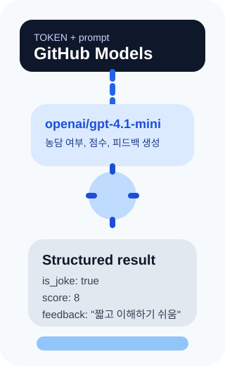
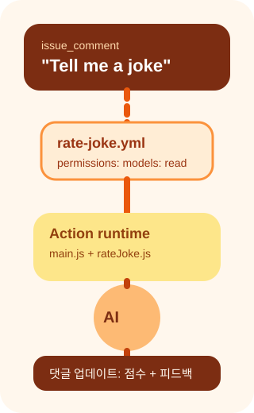

이 실습에서 배우는 것
하나의 API 키로 여러 AI 모델을 사용할 수 있는 GitHub 통합 플랫폼
GitHub Models 엔드포인트와 통신하는 클라이언트 라이브러리 활용
Zod 스키마로 AI 응답을 신뢰할 수 있는 JSON으로 변환
구조화된 출력을 활용한 지능적인 워크플로우 제어
 GitHub Models
GitHub Models
하나의 API로 여러 AI 모델을 사용하기
GitHub Models는 하나의 API 키로 여러 주요 AI 모델에 접근할 수 있게 하여 개발자 워크플로우에 AI를 쉽게 통합합니다.
핵심 특징
- 통합 엔드포인트 —
https://models.github.ai/inference - 다양한 모델 — GPT-4.1, o-series 등 다수
- 프로그래밍 접근 — HTTP 요청 또는 SDK 사용
- 사용량 제한 — 모델마다 다른 rate limit 적용

 OpenAI SDK로 AI 호출
OpenAI SDK로 AI 호출
GitHub Models와 OpenAI 클라이언트로 통신하기
OpenAI SDK를 사용하여 GitHub Models 엔드포인트와 상호작용합니다. baseURL만 변경하면 GitHub Models를 바로 사용할 수 있습니다.
const OpenAI = require("openai");
const client = new OpenAI({
baseURL: "https://models.github.ai/inference",
apiKey: token
});
const response = await
client.chat.completions.create({
messages: [
{ role: "system", content: "..." },
{ role: "user", content: joke }
],
model: "openai/gpt-4.1-mini"
});npm install openai 후엔드포인트만 GitHub Models로 지정하면 끝!
 Action 메타데이터
Action 메타데이터
action.yml — Action의 인터페이스 정의
action.yml은 Action의 입출력과 실행 환경을 정의하는 메타데이터 파일입니다.
name: "Rate Joke Action"
description: "Rates a joke using GitHub Models"
inputs:
joke:
description: "The joke to be rated"
required: true
token:
description: "PAT for GitHub Models"
default: ${{ github.token }}
outputs:
result:
description: "AI-generated joke evaluation"
runs:
using: node24
main: dist/index.jsruns.using: node24 — Node.js 24 런타임에서 실행runs.main: dist/index.js — 번들링된 진입점
 구조화된 출력
구조화된 출력
자유 텍스트 대신 신뢰할 수 있는 JSON으로
구조화된 출력을 사용하면 모델이 항상 지정된 JSON Schema를 준수하는 응답을 생성합니다.
왜 필요한가?
- 일관된 형식 — 매번 동일한 구조의 JSON 반환
- 자동 유효성 검사 — 스키마에 맞지 않으면 파싱 오류
- 후속 자동화 — 조건부 워크플로우 로직 가능
- 타입 안전 — 코드에서 안전하게 필드 접근
워크플로우에서 조건부 분기가 가능해집니다!
 Zod 스키마로 응답 정의
Zod 스키마로 응답 정의
타입 안전한 AI 응답 스키마
Zod는 JSON Schema 대신 사용할 수 있는 스키마 선언 및 유효성 검사 라이브러리입니다.
const JokeRatingSchema = z.object({
is_joke: z.boolean(),
score: z.number().min(1).max(10)
.nullable(),
humor_type: z.string().nullable(),
feedback: z.string().nullable()
});
const completion = await
client.chat.completions.parse({
messages: [...],
model: "openai/gpt-4.1-mini",
response_format:
zodResponseFormat(
JokeRatingSchema, "joke_rating"
)
});completion.choices[0].message.parsed로 접근
 실습의 비밀 — 워크플로우 연동
실습의 비밀 — 워크플로우 연동
이슈 댓글 → AI 평가 → 댓글 업데이트
이 실습은 이슈 댓글을 트리거로 AI Action이 농담을 분석하고, 결과로 댓글을 자동 업데이트합니다.
워크플로우 흐름
- 1단계: 환경 설정 — Codespace +
npm install openai - 2단계: AI 로직 —
rateJoke.js+main.js구현 - 3단계: 워크플로우 —
rate-joke.yml작성 - 4단계: 구조화 출력 — Zod 스키마 + 조건부 로직
- 5단계: 검증 — 농담 / 비농담 댓글로 테스트
models: read 권한으로 GITHUB_TOKEN에AI 모델 접근 권한을 부여해야 합니다!

 핵심 정리
핵심 정리
단일 엔드포인트로 다양한 AI 모델 통합
baseURL만 변경하면 GitHub Models와 바로 연동
입출력·런타임을 정의하는 Action 메타데이터
Zod 스키마로 JSON 응답 보장 → 조건부 워크플로우
타입 안전한 스키마 선언 + 자동 유효성 검사